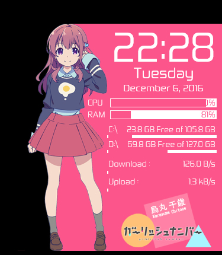
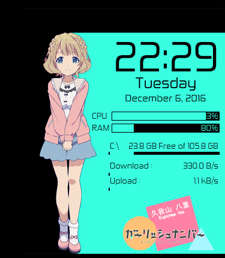
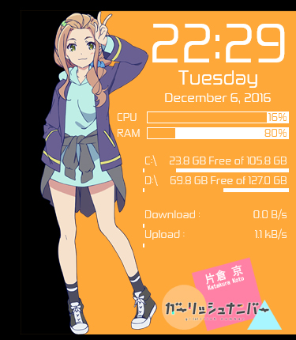
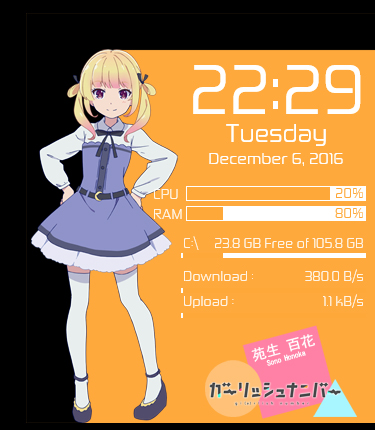
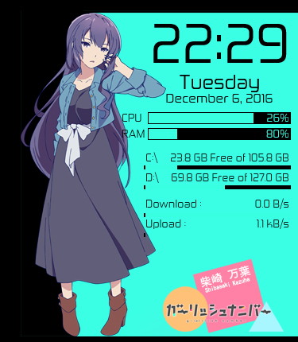

Gi(a)rlish Number Anime Rainmeter Released
Wednesday, December 7, 2016
Let's come back to the main topic, right now. I'll share Gi(a)rlish Number Anime Rainmeter. Inside this Rainmeter, there's five skins variations. Five skins based on five main girl characters on this Anime. First,
That is the character image, now here is the screenshot of the skins.





That is the screenshots. The black background is the tranparent area, you can download it from links below.
DOWNLOAD | PASSWORD
Copyright © 2016 Yusatsu Nao, Copyright © Diomedea
All images are copyright to their respective owners.
I hope you enjoy this skins. I will create another skin again tomorrow and other stuff too. So, follow this site and follow my official LINE@ Account, you can check it on About Page and find LINE@ Account in there.